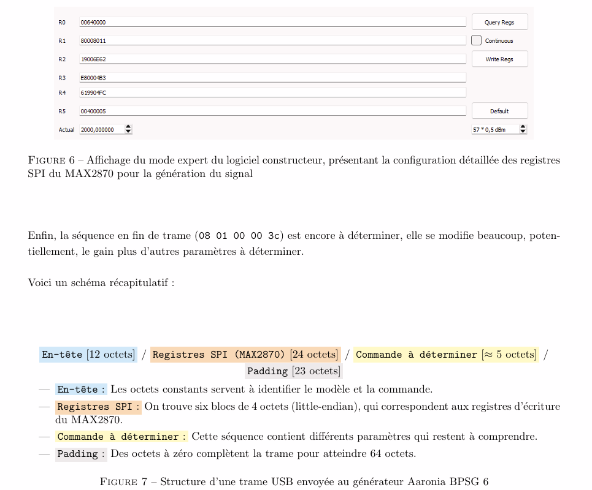

Hacking Hardware : Générateur RF
Reverse Engineering & Développement de Driver
Le Challenge
Prise de contrôle d'un générateur de signaux RF propriétaire (Aaronia BPSG6) sans utiliser le logiciel officiel obsolète. L'objectif est de comprendre le protocole de communication caché pour développer un driver Open Source en Python, permettant d'automatiser le pilotage de l'appareil (fréquence, puissance) depuis n'importe quel système d'exploitation.
Analyse (Sniffing)
Utilisation de Wireshark couplé à USBpcap pour intercepter les échanges de données brutes entre le logiciel constructeur et le générateur. Cette étape permet de capturer les trames hexadécimales envoyées via le port USB lors de chaque commande (changement de fréquence, activation RF).
Décodage Hardware
Identification de la structure des trames par ingénierie inverse. L'analyse des datasheets des composants internes (synthétiseur de fréquence MAX2870) a permis de comprendre comment les commandes USB encapsulent les registres SPI nécessaires au pilotage du matériel.
Développement Python
Création d'un script de contrôle complet en Python. Le programme reconstruit les trames binaires valides et les envoie directement au périphérique, offrant ainsi une interface légère et scriptable pour piloter le générateur sans interface graphique lourde.
Mon Ressenti
Ce que j'ai aimé
- L'aspect "détective" du reverse engineering : analyser l'inconnu
- Décoder un protocole USB propriétaire sans aucune documentation
- Redonner vie à un équipement abandonné par son fabricant
- Le sentiment de satisfaction quand le premier signal RF a été généré
Ce que j'ai découvert
- Les outils de capture et d'analyse USB (Wireshark, USBPcap)
- La structure des protocoles de communication propriétaires
- La puissance de Python pour le prototypage rapide de drivers
- Les enjeux de cybersécurité liés aux équipements RF
Ce que j'ai amélioré
- Ma capacité d'analyse et de déduction logique
- Ma maîtrise des protocoles de communication bas niveau
- Ma persévérance face à des problèmes complexes sans solution évidente
- Mes compétences en documentation et ingénierie inverse
Ce projet m'a appris que comprendre un système, c'est parfois mieux que le construire soi-même. Le reverse engineering demande patience, méthode et créativité. C'est comme résoudre un puzzle géant dont on n'a pas la boîte ! 🔐
Compétences Mobilisées
Compétences Mobilisées
Compétences BUT (Niv. 2)
Vérifier (Niv 2)
Analyse approfondie du protocole USB propriétaire
Maintenir (Niv 2)
Pérennisation du matériel via un driver alternatif
Savoir-Faire Technique
🛠️ Compétences Techniques
Python
USB Protocol
Wireshark
Reverse Engineering
Driver Custom
🤝 Compétences Transversales
Analyse
Documentation
Autonomie
Résolution de problèmes
Analyse des Trames (Sniffing)
Extrait du compte rendu montrant l'analyse détaillée des registres et des commandes interceptées. Cette capture illustre les différents registres du synthétiseur MAX2870 ainsi que le logiciel propriétaire envoyant les trames USB au générateur RF.
